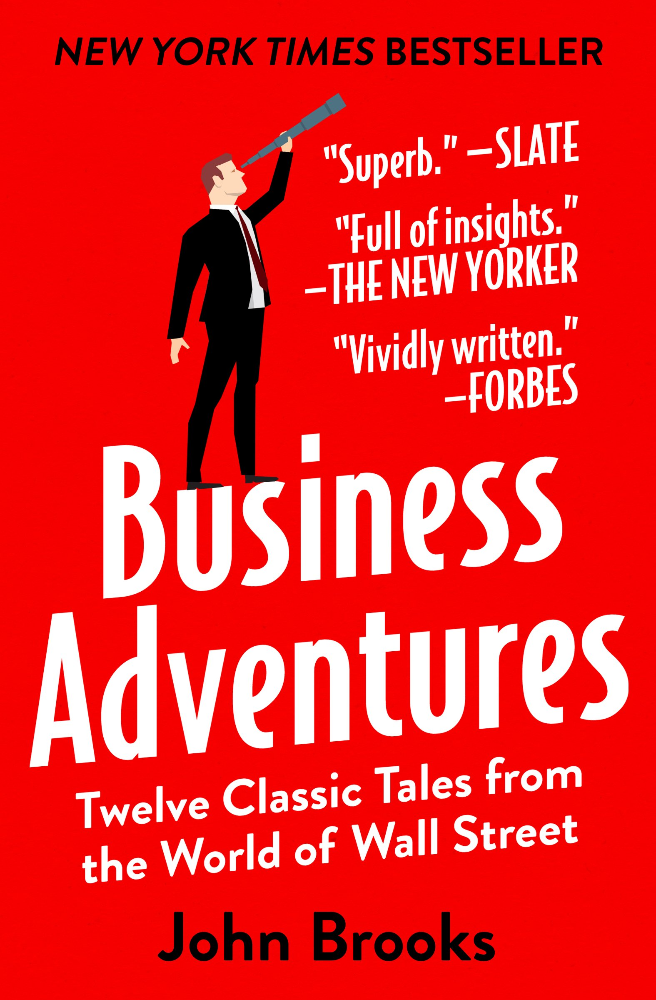

My Thoughts On Learning
When it comes to learning, I think that learning is a critical part of life
and I take an odd stance
where I'm always fascinated about how things work. Sure, I do like business and tech in
particular, but I also love learning about new trends in food, real estate, manufacturing,
construction, animals, and literally anything.
I would say that this is probably what really defines me as a person because
most of what I do in
life revolves around this idea of learning. The best way to learn, in my opinion, is to talk
directly with
individuals about their experiences. Obviously, this is not the most convenient way, so instead I
love reading books (which I'll have a short list below) and watching videos online such as watching
a
tutorial for learning/obtaining my Google Cloud Associate Degree.

Cool Books I Read
Here is just a short list of some books I read over the past few years. These are just a few of my
favorites and are in no particular order.
-
This was certainly one of the best books I read when it came to sales and
practical business
practice. I read it a few years ago and to this day, I still think about and utilize a few
of the techniques Belfort emphasized.

-
Coming from a business and tech background, I really did enjoy the messages
Kai-Fu Lee said
where it seemed to be more of a hard-truth of AI and how the US and China, in particular,
will utilize AI going forward: for both good and bad.

-
I didn't think I would really be into learning about human history
(especially for a book
that's like 400 pages long), but this book changed my perspective on how history develops
and answers an essential question of "Why did Native Americans NOT come to Europe and
colonize
European communities, but rather Europeans coming to colonize the Americas?"
-
This was of the first books I read about business. It's just a short
collection of business
stories from Wall Street that have different themes and motfis.
